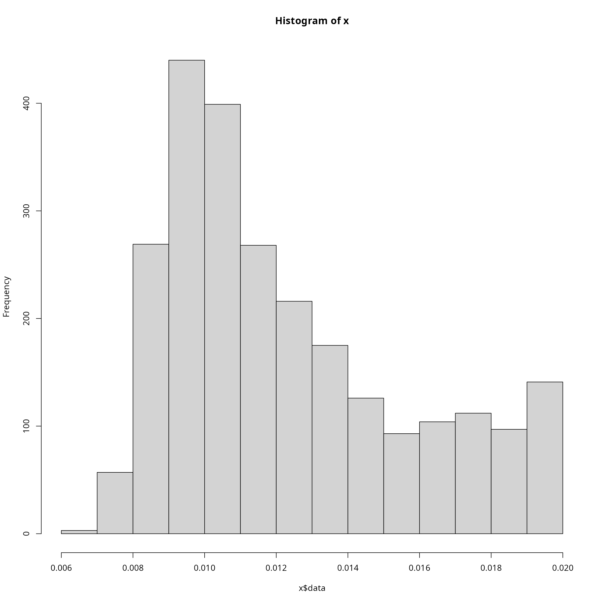
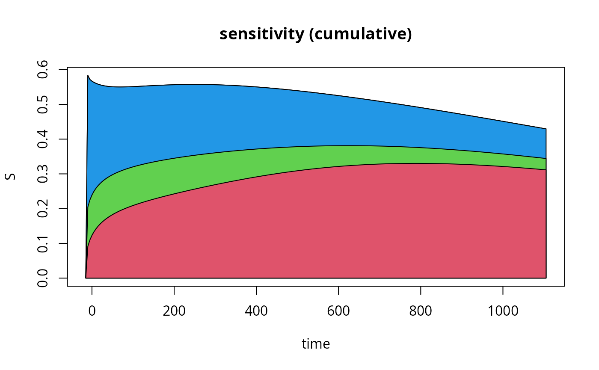

AKAR4
AKAR4.RmdWe load the model from a collection of TSV files, convert the contents to a list of data.frames and also load the R functions of the model. The R file we source includes a variable called model, it is a list of functions, onme of which is called model$par() and returns the default parameters of the model in linear space:
model.tsv <- uqsa_example("AKAR4",full.names=TRUE)
model.tab <- sbtab_from_tsv(model.tsv) # SBtabVFGEN
#> [tsv] file[1] «/tmp/RtmpBwLhZs/temp_libpath12f0681c54c6/uqsa/extdata/AKAR4/AKAR4_100nM.tsv» belongs to Document «AKAR4»
#> I'll take this as the Model Name.
source(uqsa_example("AKAR4",pat="^AKAR4[.]R$"))
#> Loading required package: deSolve
modelName <- checkModel(comment(model.tab),uqsa_example("AKAR4",pat="_gvf[.]c$")) # SBtabVFGEN
#> building a shared library from c source, and using GSL odeiv2 as backend (pkg-config is used here).
#> cc -shared -fPIC `pkg-config --cflags gsl` -o './AKAR4.so' '/tmp/RtmpBwLhZs/temp_libpath12f0681c54c6/uqsa/extdata/AKAR4/AKAR4_gvf.c' `pkg-config --libs gsl`
numPar <- nrow(model.tab$Parameter)
parNames <- row.names(model.tab$Parameter)
parVal <- model$par()[1:numPar]
parMap <- function (parABC=0) {
return(10^parABC)
}We want to sample in logarithmic space, so we set up a mapping function that the sampler will call before it simulates the model.
Next, we load the list of experiments from the same list of data.frames (SBtab content):
experiments <- sbtab.data(model.tab)Define lower and upper Limits for log-uniform prior distribution for the parameters:
defRange <- 1000
ll <- c(parVal/defRange)
ul <- c(parVal*defRange)
ll <- log10(ll) # log10-scale
ul <- log10(ul) # log10-scaleDefine Number of Samples for the Precalibration (npc) and each ABC-MCMC chain (ns)
ns <- 500 # no of samples required from each ABC-MCMC chain
npc <- 500 # pre-calibration
delta <- 0.002
set.seed(2022)
nCores <- parallel::detectCores()We define a function that measures the distance between experiment and simulation:
distanceMeasure <- function(funcSim, dataExpr, dataErr = 1.0){
distance <- mean(((funcSim-dataExpr$AKAR4pOUT)/max(dataExpr$AKAR4pOUT))^2,na.rm=TRUE)
return(distance)
}We divide the workload into chunks and loop over the chunks:
chunks <- list(c(1,2),3)
priorPDF <- dUniformPrior(ll, ul)
rprior <- rUniformPrior(ll, ul)
start_time = Sys.time()
for (i in seq(length(chunks))){
expInd <- chunks[[i]]
simulate <- simulator.c(experiments[expInd],modelName,parMap)
Obj <- makeObjective(experiments[expInd],modelName,distanceMeasure,parMap,simulate)
time_pC <- Sys.time()
options(mc.cores = nCores)
pC <- preCalibration(Obj, npc, rprior, rep=3)
M <- getMCMCPar(pC$prePar, pC$preDelta, delta, num=1)
time_pC <- Sys.time() - time_pC
cat(sprintf("\t - time spent on precalibration: %g s\n",time_pC))
time_ABC <- Sys.time()
mcmc <- ABCMCMC(Obj, as.numeric(M$startPar), ns, M$Sigma, delta, priorPDF)
time_ABC <- Sys.time() - time_ABC
cat(sprintf("\t - time spent on ABC-MCMC: %g s\n",time_ABC))
if (i>1){
simulate <- simulator.c(experiments[chunks[[1]]],modelName,parMap)
Obj <- makeObjective(experiments[chunks[[1]]],modelName,distanceMeasure,parMap,simulate)
mcmc$draws <- checkFitWithPreviousExperiments(mcmc$draws, Obj, delta)
}
# Save Resulting Samples to MATLAB and R files.
C <- fitCopula(mcmc$draws)
priorPDF <- dCopulaPrior(C)
rprior <- rCopulaPrior(C)
}
#> - time spent on precalibration: 2.24256 s
#> Started chain.
#>
#> n = 10000 used (Mb) gc trigger (Mb) max used (Mb)
#> Ncells 1838879 98.3 2856029 152.6 2856029 152.6
#> Vcells 3157694 24.1 8388608 64.0 7414814 56.6
#>
#> n = 20000 used (Mb) gc trigger (Mb) max used (Mb)
#> Ncells 1839043 98.3 2856029 152.6 2856029 152.6
#> Vcells 3158056 24.1 8388608 64.0 7485430 57.2
#>
#> n = 30000 used (Mb) gc trigger (Mb) max used (Mb)
#> Ncells 1839046 98.3 2856029 152.6 2856029 152.6
#> Vcells 3158088 24.1 8388608 64.0 7485430 57.2
#>
#> n = 40000 used (Mb) gc trigger (Mb) max used (Mb)
#> Ncells 1839048 98.3 2856029 152.6 2856029 152.6
#> Vcells 3158108 24.1 8388608 64.0 7485430 57.2
#>
#> n = 50000 used (Mb) gc trigger (Mb) max used (Mb)
#> Ncells 1839051 98.3 2856029 152.6 2856029 152.6
#> Vcells 3158135 24.1 8388608 64.0 7506576 57.3
#> - time spent on ABC-MCMC: 45.8361 s
#> - time spent on precalibration: 1.45686 s
#> Started chain.
#>
#> n = 10000 used (Mb) gc trigger (Mb) max used (Mb)
#> Ncells 1895933 101.3 2856029 152.6 2856029 152.6
#> Vcells 3288046 25.1 8388608 64.0 7506576 57.3
#>
#> n = 20000 used (Mb) gc trigger (Mb) max used (Mb)
#> Ncells 1895936 101.3 2856029 152.6 2856029 152.6
#> Vcells 3288074 25.1 8388608 64.0 7506576 57.3
#>
#> n = 30000 used (Mb) gc trigger (Mb) max used (Mb)
#> Ncells 1895940 101.3 2856030 152.6 2856030 152.6
#> Vcells 3288106 25.1 8388608 64.0 7506576 57.3
#>
#> n = 40000 used (Mb) gc trigger (Mb) max used (Mb)
#> Ncells 1895943 101.3 2856031 152.6 2856031 152.6
#> Vcells 3288134 25.1 8388608 64.0 7506576 57.3
#>
#> n = 50000 used (Mb) gc trigger (Mb) max used (Mb)
#> Ncells 1895946 101.3 2856031 152.6 2856031 152.6
#> Vcells 3288162 25.1 8388608 64.0 7506576 57.3
#> - time spent on ABC-MCMC: 4.25383 s
#>
#> -Checking fit with previous data
#> -- 157 samples did not fit previous datasets
end_time = Sys.time()
time_ = end_time - start_time
print(time_)
#> Time difference of 5.144722 minsWe plot the sample as a two dimensional histogram plot-matrix using the hexbin package:

A sensitivity plot using the results of the above loop:
y<-simulate(t(mcmc$draws))
f<-aperm(y[[1]]$func[1,,]) # aperm makes the sample-index (3rd) the first index of f, default permutation
S<-sensitivity(mcmc$draws,f)
S[1,]<-0 # the first index of S is time, and initially sensitivity is 0
cuS<-t(apply(S,1,cumsum))
plot.new()
tm<-experiments[[3]]$outputTimes
plot(tm,cuS[,3],type="l")
## this section makes a little sensitivity plot:
for (si in dim(S)[2]:1){
polygon(c(tm,rev(tm)),c(cuS[,si],numeric(length(tm))),col=si+1)
}